Volatility Linux¶
Memory Volatility in Linux¶
Summarizing what was studied in class and what was experienced in the previous Practice 2, there are several ways to obtain a memory image from a Linux system. In addition to dumping memory from a virtual machine (VMware, VirtualBox, KVM, etc.) or capturing images through the FireWire interface, there are two ways to dump memory from a running system using live acquisition tools:
1. Copying /dev/mem directly using user‑space tools¶
The typical command could be:
dd if=/dev/mem of=test.dump bs=512 conv=noerror
However, this only works if the kernel option CONFIG_STRICT_DEVMEM is not enabled.
You can check whether this feature is enabled by searching in:
/boot/config-$(uname -r)
If it is enabled, user‑space reads from /dev/mem or /dev/kmem cannot go beyond the first megabyte.
If it is not enabled, LiME (see below) is not necessary and a kernel dump can be obtained as shown above.
Using LiME has two additional advantages:
It can be used on Android systems.
It allows dumping memory in a format compatible with standard kernel debuggers.
2. Using a special kernel module (LiME or fmem)¶
These are Loadable Kernel Modules (LKM) that allow volatile memory acquisition from Linux and Linux‑based devices such as Android.
LiME is the first tool that allows full memory capture on Android devices.
It also minimizes interaction between the user and kernel space processes during acquisition, producing memory dumps that are more forensically reliable than those generated by other Linux memory acquisition tools.
Tools used in this exercise¶
Volatility
Open‑source software used to extract digital artifacts from volatile memory (RAM).
Developed and maintained by The Volatility Foundation.Python
Interpreted programming language required to run Volatility.
Version 2.6 minimum is required (2.7 recommended).
Current Volatility 2 versions do not support Python 3, therefore Volatility 3 has been developed to support Python 3.
Volatility requires several Python libraries that are not always installed automatically.Distorm3
Disassembler library for x86 / AMD64 architectures.
Converts binary data streams into assembly instructions represented as Python data structures.
Required for the Volatility plugins:apihooks
impscan
callbacks
volshell
linux_volshell
mac_volshell
Yara
Tool used to classify malware by creating malware signatures.
Required for theyarascanoption in Volatility.
Objective¶
Learn how to perform basic memory dump analysis in Linux.
Materials¶
Any Linux distribution
Volatility 2
Volatility 3
Tasks¶
Create or use a Linux virtual machine where the following tasks will be performed:
1. Download the memory dump of a Linux machine¶
Download this Linux memory dump.
2. Volatility 2¶
a. Install Volatility 2¶
This are all the steps that I followed, probably there is an efficient way, but this is what worked for me
git clone https://github.com/volatilityfoundation/volatility.git
mv volatility volatility2
cd volatility2
sudo nano /etc/apt/sources.list # Paste deb http://archive.debian.org/debian/ stretch contrib main non-free
sudo apt update
sudo python2.7 setup.py install
sudo apt install python2.7-dev
curl https://bootstrap.pypa.io/pip/2.7/get-pip.py -o get-pip.py
sudo python2 get-pip.py
sudo python2 -m pip install --upgrade setuptools wheel
sudo pip2 install virtualenv
python2 -m virtualenv venv
source venv/bin/activate
pip install distorm3 pycrypto openpyxl
pip2 install distorm3 yara-python pycrypto
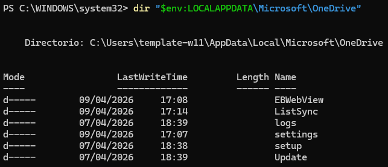
I want to execute volatility2 everywhere. It could be as follows:
nano /usr/local/bin/vol2
Paste this script:
#!/bin/bash
# Launcher for Volatility 2 on Kali with Python 2 virtualenv
# Adjust paths if your Volatility 2 folder is elsewhere
VENV_DIR="$HOME/desktop/tools/volatility2/venv"
VOL_DIR="$HOME/desktop/tools/volatility2"
# Check that virtualenv exists
if [ ! -d "$VENV_DIR" ]; then
echo "[ERROR] Virtual environment not found at $VENV_DIR"
exit 1
fi
# Activate virtualenv
source "$VENV_DIR/bin/activate"
# Run Volatility 2 with any arguments passed to this script
python "$VOL_DIR/vol.py" "$@"
# Deactivate virtualenv
deactivate
Deactivate the virtual environment created previously:
deactivate
Adjust the permissions:
sudo chmod +x /usr/local/bin/vol2
And feel free to use volatility2 everywhere:
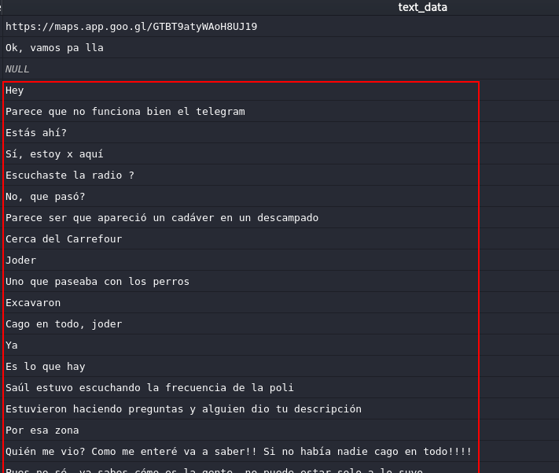
b. Prepare Volatility 2 to work with Linux profiles (linux overlays)¶
Download this volatility memory profileand copy it into the correct directory (overlays/linux) so it can be used with Volatility 2.
Question:
If you only had the memory dump, how could you determine the operating system version it belongs to?
(Hint: banner modifier)
Move the volatility memory profile into the oeverlays/linux directory
cp debian10-4.19.0-23-686.zip ~/desktop/tools/volatility2/volatility/plugins/overlays/linux
Verify that volatility detects the profile correctly:
vol2 --info | grep Linuxdebian
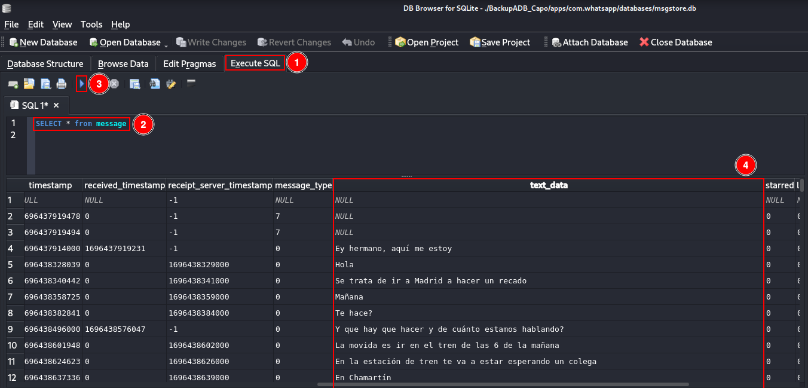
If we don’t know the operating system version, we can use the following command to determine it:
strings ram.lime | grep "Linux version"
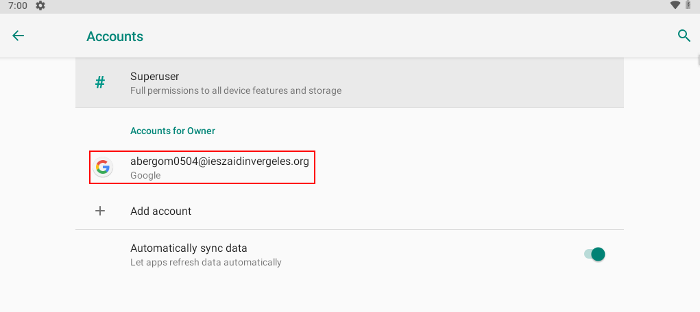
c. Perform basic analysis of Linux memory dumps¶
Process analysis¶
linux_pslist
vol2 -f ram.lime --profile=Linuxdebian10-4_19_0-23-686x86 linux_pslist
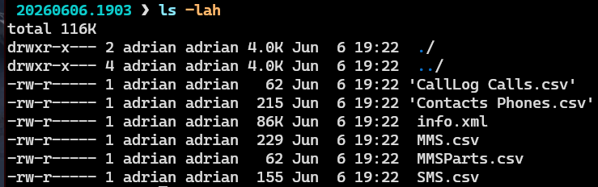
linux_psaux
vol2 -f ram.lime --profile=Linuxdebian10-4_19_0-23-686x86 linux_psaux
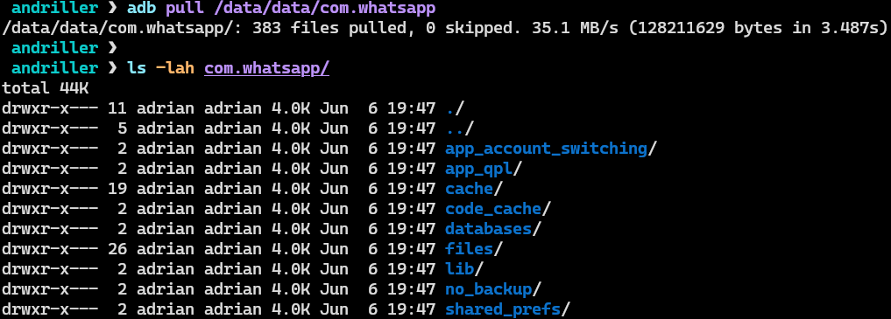
linux_pstree
vol2 -f ram.lime --profile=Linuxdebian10-4_19_0-23-686x86 linux_pstree
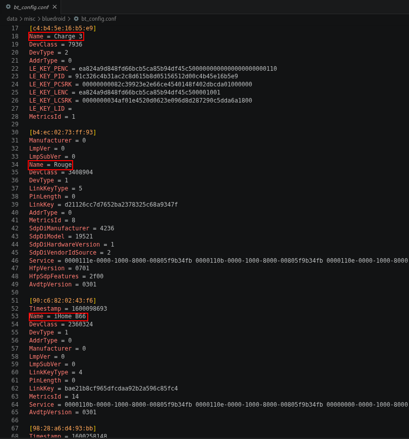
linux_cpuinfo
vol2 -f ram.lime --profile=Linuxdebian10-4_19_0-23-686x86 linux_cpuinfo
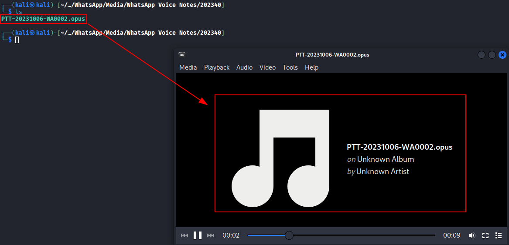
Network analysis¶
linux_arp
vol2 -f ram.lime --profile=Linuxdebian10-4_19_0-23-686x86 linux_arp
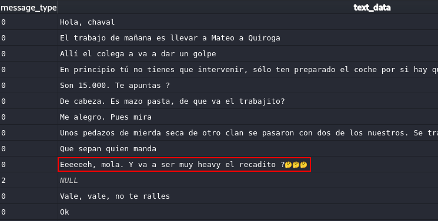
linux_ifconfig
vol2 -f ram.lime --profile=Linuxdebian10-4_19_0-23-686x86 linux_ifconfig
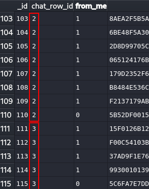
linux_route_cache
vol2 -f ram.lime --profile=Linuxdebian10-4_19_0-23-686x86 linux_route_cache
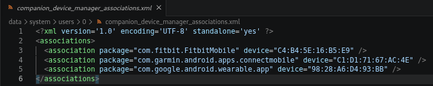
linux_netstat
vol2 -f ram.lime --profile=Linuxdebian10-4_19_0-23-686x86 linux_netstat
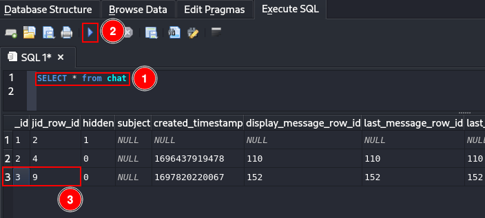
Files and kernel analysis¶
linux_enumerate_files
vol2 -f ram.lime --profile=Linuxdebian10-4_19_0-23-686x86 linux_enumerate_files
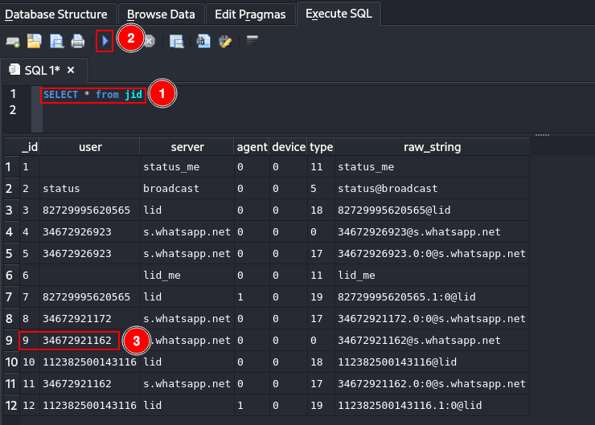
linux_find_file
vol2 -f ram.lime --profile=Linuxdebian10-4_19_0-23-686x86 linux_find_file -F "/file"
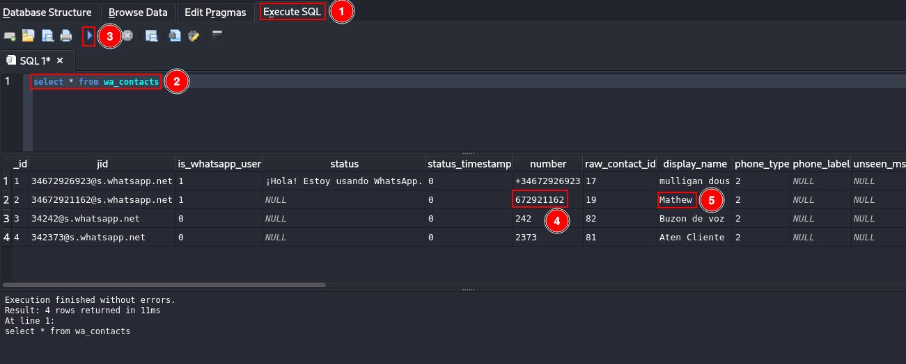
linux_recover_filesystem
mkdir dump
sudo -E vol2 -f ram.lime --profile=Linuxdebian10-4_19_0-23-686x86 linux_recover_filesystem --dump-dir=dump
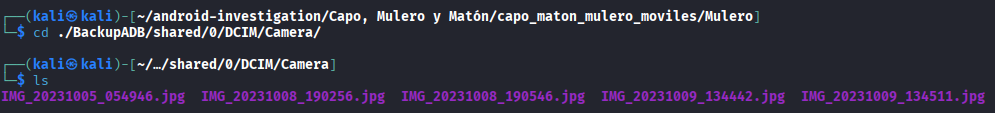
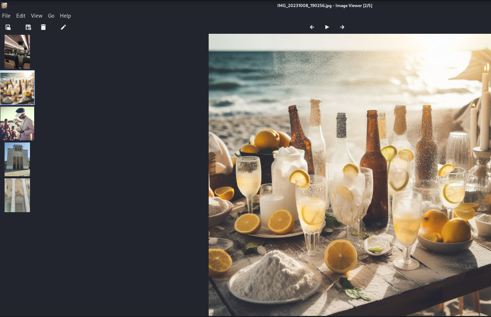
linux_mount
vol2 -f ram.lime --profile=Linuxdebian10-4_19_0-23-686x86 linux_mount
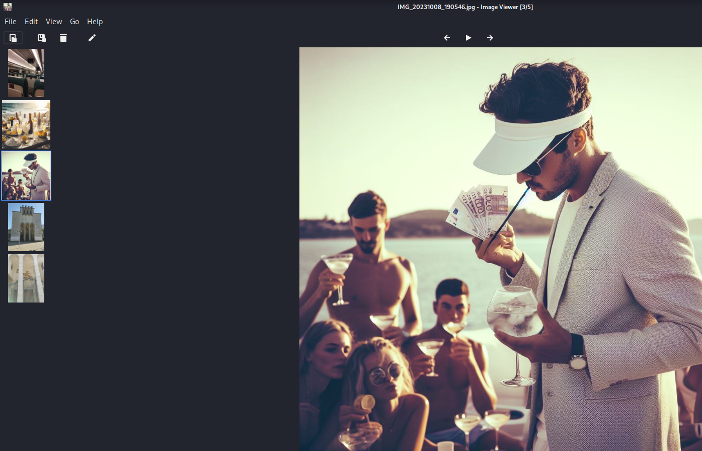
linux_mount_cache
vol2 -f ram.lime --profile=Linuxdebian10-4_19_0-23-686x86 linux_mount_cache
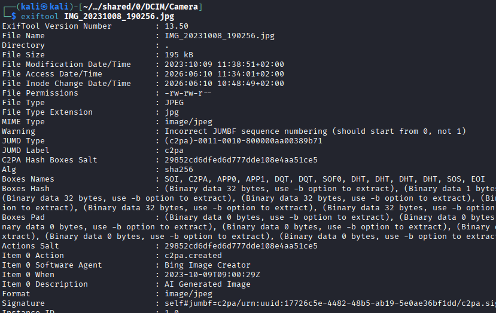
linux_bash
vol2 -f ram.lime --profile=Linuxdebian10-4_19_0-23-686x86 linux_bash
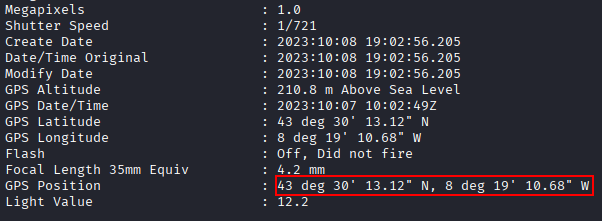
linux_dmesg
vol2 -f ram.lime --profile=Linuxdebian10-4_19_0-23-686x86 linux_dmesg
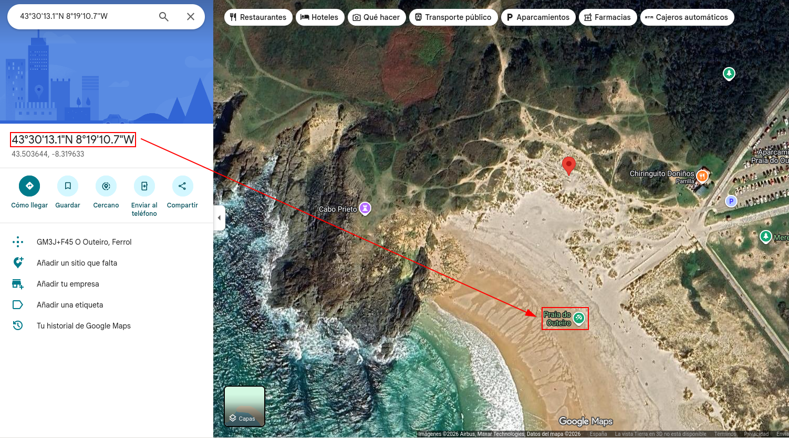
d. Generate specific profiles for Volatility¶
Follow the steps explained in class to generate a specific Volatility profile for the Linux system used in this practice using:
module.dwarf
/boot/config
System.map
sudo apt install dwarfdump build-essential linux-./images/image-($uname -a) linux-headers-$(uname -r)
cd volatility2/tools/linux
make
The previous error is due we have to accept the GLP license before compiling. Edit module.c to acept said license.
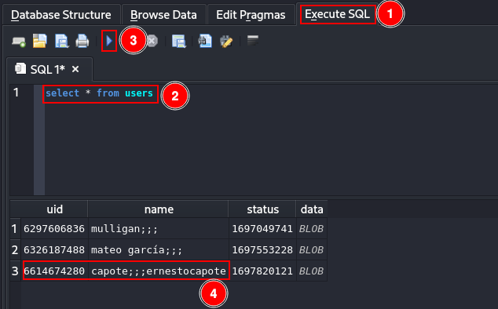
make
Note: After performing the following steps using my Kali I had problems, so that I decided to use another machine using an older kernel and it works correctly:
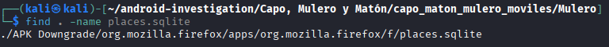
Make the zip file Debian-6.1.0-31-amd64
zip Debian-6.1.0-31-amd64 module.dwarf /usr/lib/debug/boot/System.map-6.1.0-31-amd64
Move it inside plugins/linux
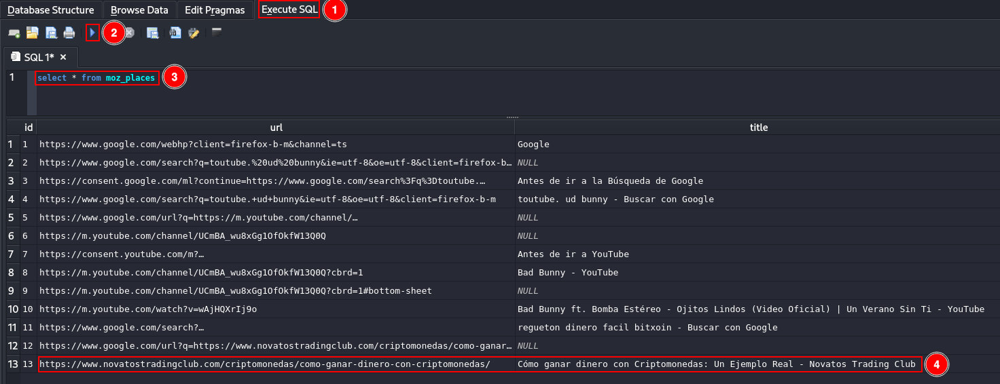
mv Debian-6.1.0-31-amd64 volatility2/volatility/plugins/linux/
Verify that volatility 2 correctly identifies it.
vol2 --info | grep Linux
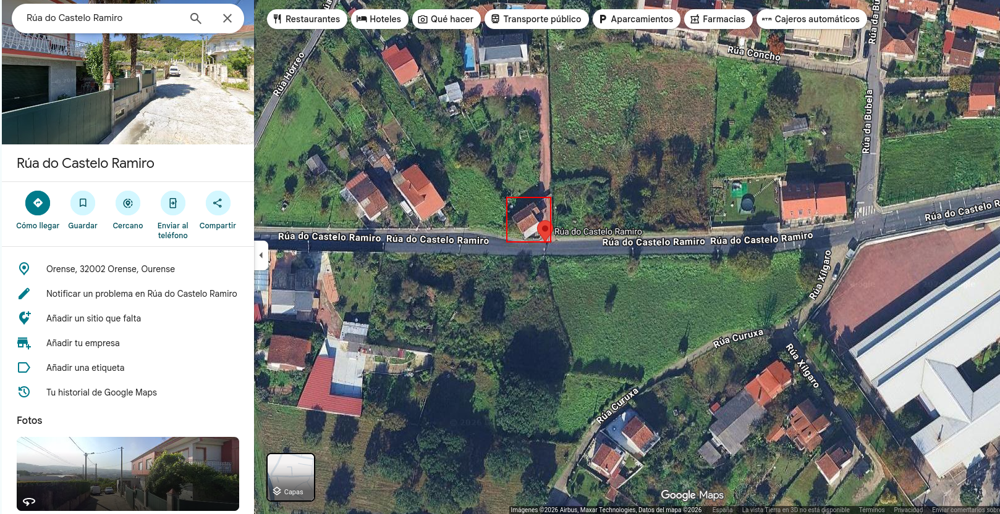
3. Volatility 3¶
a. Install Volatility 3¶
Run the following commands:
git clone htts://github.com/volatilityfoundation/volatility3.git
sudo apt install python3-pip python3-setuptools python3-wheel python3-distorm3 python3-construct python3-yara libsqlite3-dev tk-dev libc6-dev libbz2-dev
sudo nano /usr/local/bin/vol3
Paste this script.
#!/bin/bash
# Launcher for Volatility 3 on Kali with Python 3 virtualenv
# Adjust paths if your Volatility 3 folder is elsewhere
VENV_DIR="$HOME/desktop/tools/volatility3/venv"
VOL_DIR="$HOME/desktop/tools/volatility3"
# Check that virtualenv exists
if [ ! -d "$VENV_DIR" ]; then
echo "[ERROR] Virtual environment not found at $VENV_DIR"
exit 1
fi
# Activate virtualenv
source "$VENV_DIR/bin/activate"
# Run Volatility 3 with any arguments passed to this script
python "$VOL_DIR/vol.py" "$@"
# Deactivate virtualenv
deactivate
Change the permissions:
sudo chmod +x /usr/local/bin/vol3
Run volatility3 everywhere
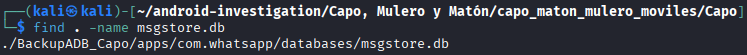
b. Prepare Volatility 3 to work with Linux profiles¶
Download the profile that matches the dump from section (1).
Copy it into the SYMBOLS directory of Volatility 3.
cp debian10-4.19.0-23-686.zip ~/desktop/tools/volatility3/volatility3/symbols
c. Perform basic analysis of Linux memory dumps¶
Note: I had some problems again with some commands in my personal Kali, I’m still investigating why, then, I will use the same Debian I used with volatility2
Use the following plugins:
banners.Banners
vol3 -f ram.lime -s ~/desktop/tools/volatility3/volatility3/symbols/ banners.Banner
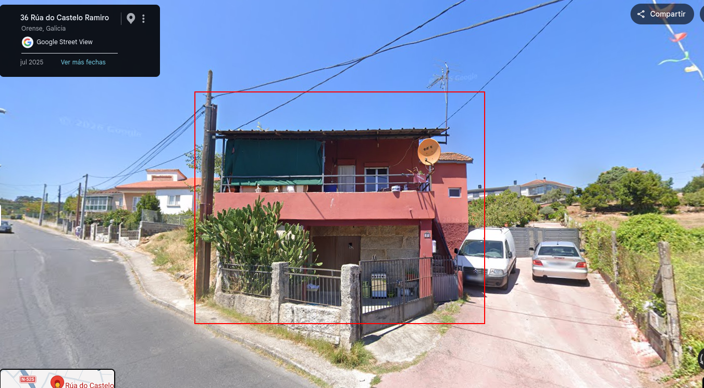
linux.bash.Bash
vol3 -f ram.lime -s ~/desktop/tools/volatility3/volatility3/symbols/ linux.bash.Bash
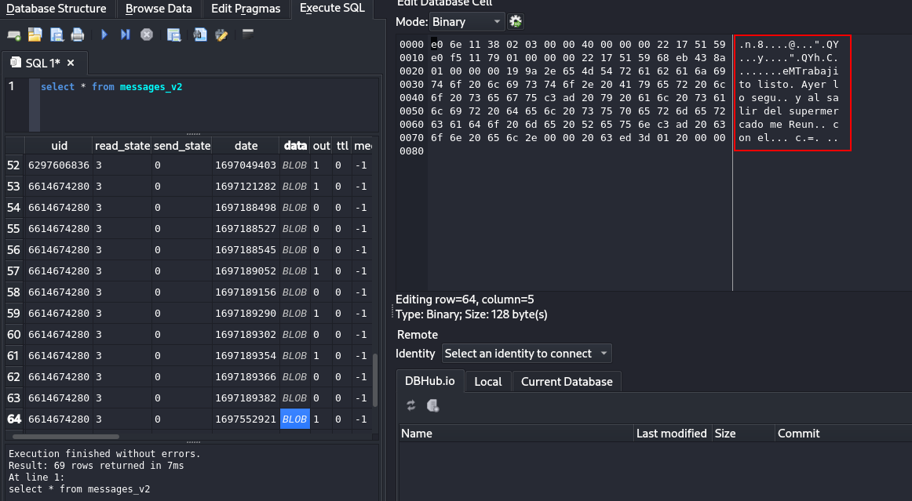
linux.kmsg.Kmsg
vol3 -f ram.lime -s ~/desktop/tools/volatility3/volatility3/symbols/ linux.kmsg.Kmsg
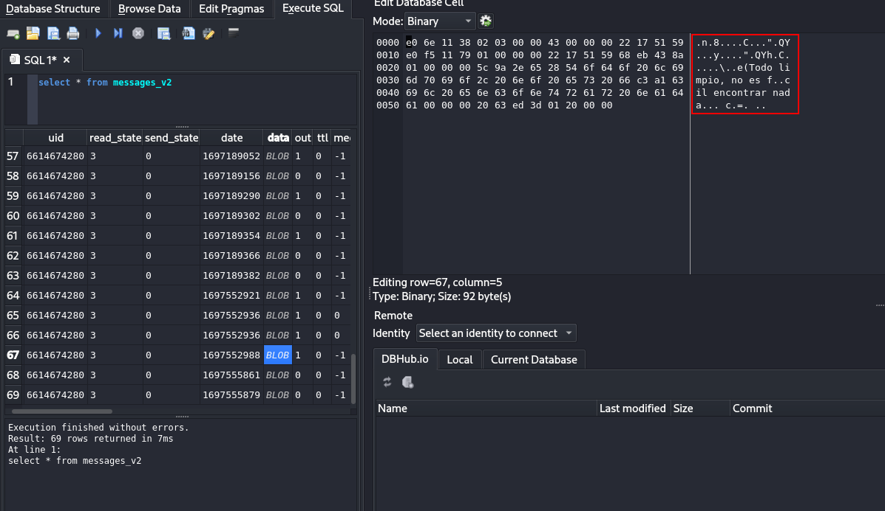
linux.lsmod.Lsmod
vol3 -f ram.lime -s ~/desktop/tools/volatility3/volatility3/symbols/ linux.lsmod.Lsmod
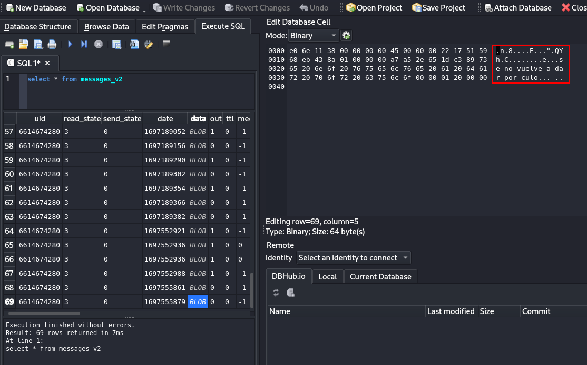
linux.lsof.Lsof
vol3 -f ram.lime -s ~/desktop/tools/volatility3/volatility3/symbols/ linux.lsof.Lsof
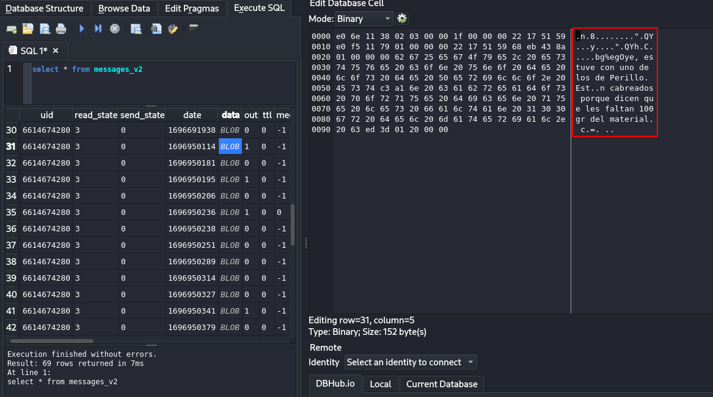
linux.malfind.Malfind
vol3 -f ram.lime -s ~/desktop/tools/volatility3/volatility3/symbols/ linux.malfind.Malfind
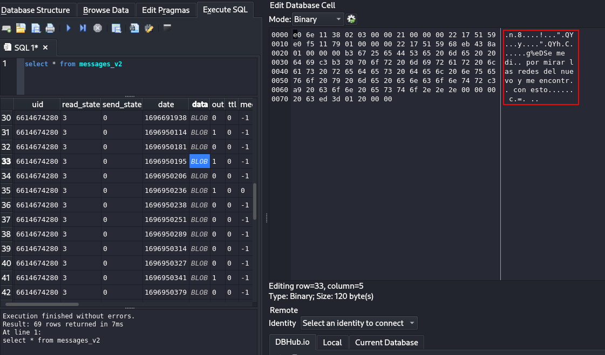
linux.mountinfo.MountInfo
vol3 -f ram.lime -s ~/desktop/tools/volatility3/volatility3/symbols/ linux.mountinfo.MountInfo
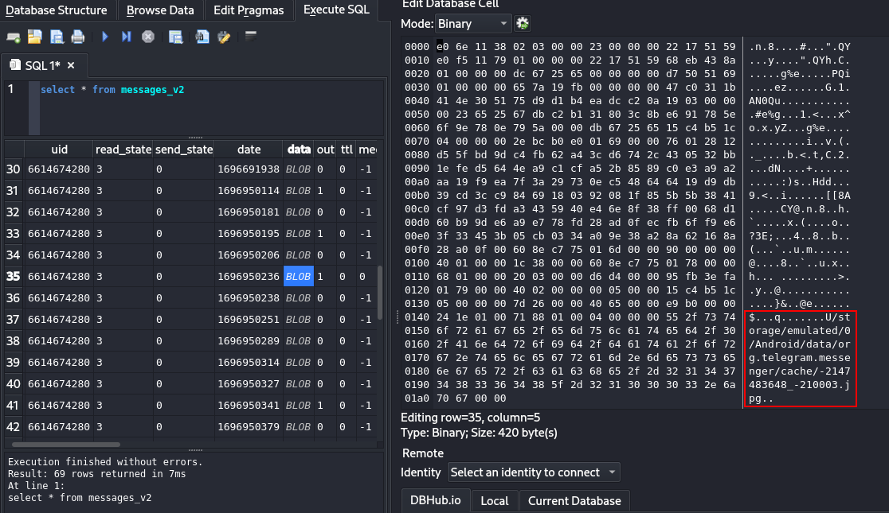
linux.proc.Maps
vol3 -f ram.lime -s ~/desktop/tools/volatility3/volatility3/symbols/ linux.proc.Maps
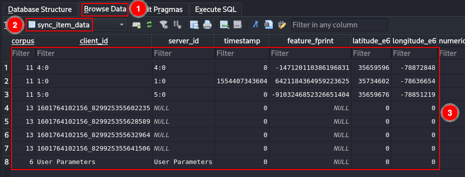
linux.psaux.PsAux
vol3 -f ram.lime -s ~/desktop/tools/volatility3/volatility3/symbols/ linux.psaux.PsAux
linux.pslist.PsList
vol3 -f ram.lime -s ~/desktop/tools/volatility3/volatility3/symbols/ linux.pslist.PsList
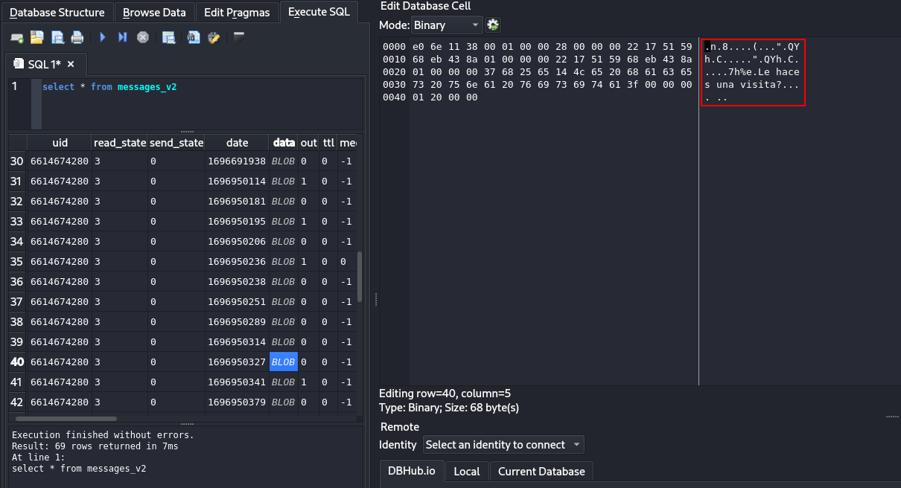
linux.psscan.PsScan
vol3 -f ram.lime -s ~/desktop/tools/volatility3/volatility3/symbols/ linux.psscan.PsScan
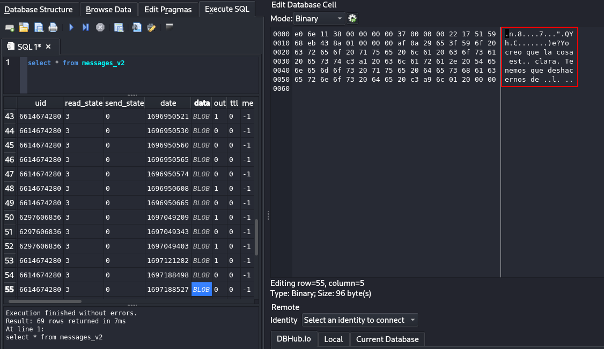
linux.pstree.PsTree
vol3 -f ram.lime -s ~/desktop/tools/volatility3/volatility3/symbols/ linux.pstree.PsTree
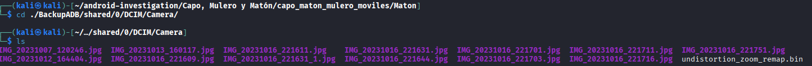
linux.sockstat.Sockstat
vol3 -f ram.lime -s ~/desktop/tools/volatility3/volatility3/symbols/ linux.sockstat.Sockstat
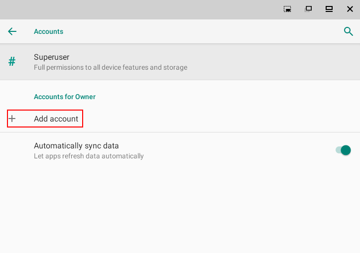
d. Generate specific profiles for Volatility¶
Follow the steps explained in class to generate a specific Volatility profile for the Linux system used in this practice using:
dwarf2json
vmlinux
System.map
Generating a profile in volatility 3 is really easy. Run the following commands changing the kernel module from your real kernel version.
git clone https://github.com/volatilityfoundation/dwarf2json.git
sudo apt install golang-go
cd dwarf2json
sudo go build .
./dwarf2json linux --elf /usr/lib/debug/lib/modules/6.1.0-31-amd64/vmlinux > debian12-kernel.json
Then, verify that it has been compiled correctly:
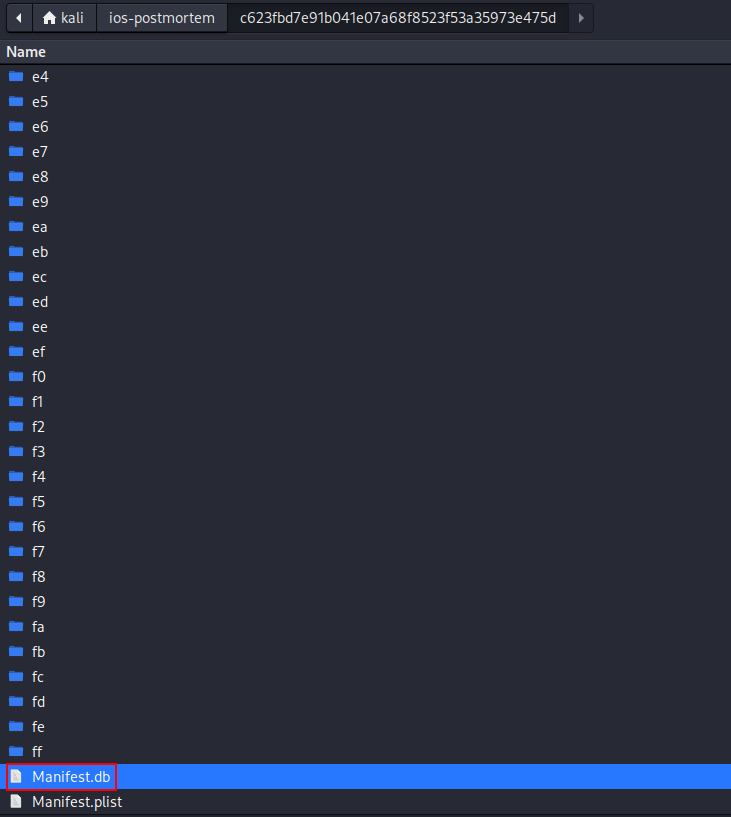